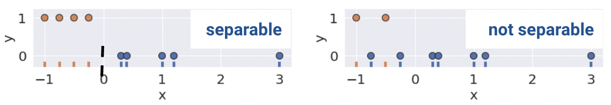
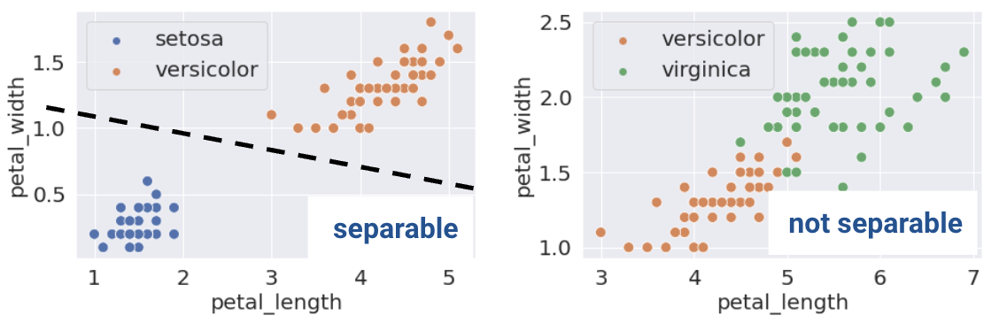

flips = [0, 0, 1, 1, 1, 1, 0, 0, 0, 0]
flips[0, 0, 1, 1, 1, 1, 0, 0, 0, 0]Today, we will continue studying the Logistic Regression model. First, we’ll examine logisitc regression through the lens of maxmium likelihood estimation and understand its connection to cross-entropy loss. Then, we’ll pick up from last lecture’s discussion of cross-entropy loss, study a few of its pitfalls, and learn potential remedies. Finally, we will provide an implementation of sklearn’s logistic regression model.
This will introduce us to the process of thresholding – a technique used to classify data from our model’s predicted probabilities, or \(P(Y=1|x)\). In doing so, we’ll focus on how these thresholding decisions affect the behavior of our model. We will learn various evaluation metrics useful for binary classification, and apply them to our study of logistic regression.
In our earlier coin toss example, we had data on 10 coin flips, and wanted to estimate \(\hat \theta\), the probability of a heads.
flips = [0, 0, 1, 1, 1, 1, 0, 0, 0, 0]
flips[0, 0, 1, 1, 1, 1, 0, 0, 0, 0]\(\hat \theta = 0.4\) is the most intuitive two reasons:
\[\hat \theta = \text{argmax}_\theta (\theta^4(1-\theta)^6)\]
More generally, we can apply this notion of likelihood to any random binary sample. For example, we can find the likelihood of the data observed in our breast cancer study. We will show how the likelihood is intrinsically related to cross-entropy loss.
As a quick refresher on likelihood:
For some Bernoulli(\(p\)) random variable \(Y\) the probability distribution, or likelihood is:
\[P(Y = y) = \begin{cases} 1, \text{with probability } p\\ 0, \text{with probability } 1 - p \end{cases} \]
Equivalently, this can be written in a compact way:
\[P(Y=y) = p^y(1-p)^{1-y}\]
In our example, a Bernoulli random variable is analagous to a single data point, or tumor (from the previous chapter). All together, our breast cancer study consist of multiple IID Bernoulli(\(p\)) random variables. To find the likelihood of independent events in succession, simply multiply their likelihoods.
\[\prod_{i=1}^{n} p^{y_i} (1-p)^{1-y_i}\]
As with the coin example, we want to find the parameter \(p\) that maximizes this likelihood - this technique is known as maximum likelihood estimation. Earlier, we gave an intuitive graphical solution, but let’s take the derivative of the likelihood to find this maximum.
From a first glance, this derivative will be complicated! We will have to use the product rule, followed by the chain rule. Instead, we can make an observation that simplifies the problem.
Finding the \(p\) that maximizes \[\prod_{i=1}^{n} p^{y_i} (1-p)^{1-y_i}\] is equivalent to the \(p\) that maximizes \[\text{log}(\prod_{i=1}^{n} p^{y_i} (1-p)^{1-y_i})\]
This is because \(\text{log}\) is a strictly increasing function. It won’t change the maximum or minimum of the function it was applied to. From \(\text{log}\) properties, \(\text{log}(a*b)\) = \(\text{log}(a) + \text{log}(b)\). We can apply this to our equation above to get:
\[\text{argmax}_p \sum_{i=1}^{n} \text{log}(p^{y_i} (1-p)^{1-y_i})\]
\[= \text{argmax}_p \sum_{i=1}^{n} \text{log}(p^{y_i}) + \text{log}((1-p)^{1-y_i})\]
\[= \text{argmax}_p \sum_{i=1}^{n} y_i\text{log}(p) + (1-y_i)\text{log}(1-p)\]
We can add a constant factor of \(\frac{1}{n}\) out front. It won’t affect the \(p\) that maximizes our likelihood.
\[=\text{argmax}_p \frac{1}{n} \sum_{i=1}^{n} y_i\text{log}(p) + (1-y_i)\text{log}(1-p)\]
One last “trick” we can do is change this to a minimization problem by negating the result. This works because we are dealing with a concave function, which can be made convex.
\[= \text{argmin}_p -\frac{1}{n} \sum_{i=1}^{n} y_i\text{log}(p) + (1-y_i)\text{log}(1-p)\]
This is exactly our average cross-entropy loss minimization problem from before!
Why did we do all this complicated math? We have shown that minimizing cross-entropy loss is equivalent to maximizing the likelihood of the training data.
You will study MLE further in probability and ML classes. But now you know it exists. It turns out that many of the model + loss combinations we’ve seen can be motivated using MLE (OLS, Ridge Regression, etc.)
The two important takeways from this section are
We will now continue to learn how to evaluate the strength of logistic regression models.
Above, we proved that minimizing cross-entropy loss is equivalent to maximizing likelihood of the training data.
Intuitively, this means that the optimal \(\hat \theta\) that minimizes cross-entropy loss “pushes” all the probabilities in the direction of their true, underlying class.
However, something interesting happens when our data is perfectly classifiable; in other words, linearly seperable.
A classification dataset is said to be linearly separable if there exists a hyperplane among input features \(x\) that separates the two classes \(y\). For example, notice how the plot on the bottom left is linearly seperable along the vertical line \(x=0\). No such line perfectly seperates the two classes on the bottom right.

This same definition holds in higher dimensions. If there are two features, the seperating hyperplane must exist in two dimensions (any line of the form \(y=mx+b\))

Complications may arise when data is linearly seperable. Consider the toy dataset with 2 points and only a single feature \(x\):

The optimal \(\theta\) value that minimizes loss pushes the predicted probabilities of the data points to their true class.
This happens when \(\theta = -\infty\). When \(\theta = -\infty\), we observe the following behavior for any input \(x\).
\[P(Y=1|x) = \sigma(\theta x) \rightarrow \begin{cases} 1, \text{if } x < 0\\ 0, \text{if } x \ge 0 \end{cases}\]
The diverging weights cause the model to be overconfident. For example, consider the new point \((x, y) = (0.5, 1)\). Following the behavior above, our model will incorrectly predict \(p=0\), and a thus, \(\hat y = 0\).

The loss incurred by this misclassified point is infinite.
\[-(y\text{ log}(p) + (1-y)\text{ log}(1-p))\]
\[=1\text{log}(0)\]
Thus, diverging weights (\(|\theta| \rightarrow \infty\)) occur with lineary separable data. “Overconfidence” is a particularly dangerous version of overfitting.
Consider the loss function with respect to the parameter \(\theta\).

Although impossible to see, the plateau for negative values of \(\theta\) is slightly tilted downwards, meaning the loss approaches \(0\) as \(\theta\) decreases and approaches \(-\infty\).
To avoid large weights, and thus, infinite loss (particularly on linearly seperable data), regularization is used. The same principles apply as with linear regression - make sure to standardize your features first.
For example, L2 (Ridge) Logistic Regression takes on the form
\[\min_{\theta} -\frac{1}{n} \sum_{i=1}^{n} (y_i \text{log}(\sigma(x_i^T\theta)) + (1-y_i)\text{log}(1-\sigma(x_i^T\theta))) + \lambda \sum_{i=1}^{d} \theta_j^2\]
Now, let us compare the loss functions of un-regularized and regularized logistic regression.

As we can see, \(L2\) regularization helps us prevent diverging weights and deters against “overconfidence.”
The implementation of logistic regression in sklearn is simple. We’ll begin by fitting a model on the breast cancer dataset from last lecture.
import pandas as pd
import sklearn.datasets
data_dict = sklearn.datasets.load_breast_cancer()
data = pd.DataFrame(data_dict['data'], columns=data_dict['feature_names'])
data['malignant'] = (data_dict['target'] == 0).astype(int)
X = data[['mean radius']]
y = data['malignant']from sklearn.linear_model import LogisticRegression
model = LogisticRegression()
model.fit(X, y);By default, sklearn applies regularization to the logistic regression class. This is to avoid diverging weights with seperable data. The code above can be written more expliclty as follows.
# sklearn defaults
model = LogisticRegression(penalty='l2', C=1.0, fit_intercept=True)
model.fit(X, y);The parameter C controls the amount of regularization – C is the inverse of the regularization hyperparameter \(\lambda\). Set C big for minimal regularization, and vice versa.
The .predict_proba method returns the predicted probabilities of belonging to each class. The first element corresponds to class \(0\), the second to class \(1\).
# Here are the first 5 predicted probabilities
model.predict_proba(X)[:5]array([[0.03507844, 0.96492156],
[0.00257756, 0.99742244],
[0.00632723, 0.99367277],
[0.96826813, 0.03173187],
[0.00343123, 0.99656877]])From here, the .predict function returns the predicted class \(\hat y\) of the point. In the simple binary case,
\[\hat y = \begin{cases} 1, & P(Y=1|x) \ge 0.5\\ 0, & \text{otherwise } \end{cases}\]
# Here are the first 5 predicted classes
model.predict(X)[:5]array([1, 1, 1, 0, 1])Now that we have our classifier, let’s quantify how well it performs. The most basic evaluation metric is accuracy – the proportion of correctly classified points.
\[\text{accuracy} = \frac{\# \text{ of points classified correctly}}{\# \text{ of total points}}\]
model.score(X, y) # built-in accuracy function0.8787346221441125However, accuracy is not always a great metric for classification, particularily when the data has class imbalance.
To understand why, let’s consider a classification problem with 100 emails, 5 of which are spam. We’ll investigate two models where accuracy is a poor metric.
Model 1 from above has 5 false negatives (FN) – data points which were predicted to belong to class \(0\) (non-spam), but their true class was \(1\) (spam). In a similar vein, Model 2 has 95 false positives (FP) – that is, “false alarms” where we predict class \(1\), but the true class was \(0\). True positives (TP) and true negatives (TN) are when we correctly classify observations as being positive or negative, respectively.
These classifications can be concisely summarized in a confusion matrix.

An easy way to remember this terminology is as follows:
A confusion matrix for a particular classifier may be found programatically. For our breast cancer data, it looks like this:
from sklearn.metrics import confusion_matrix
y_pred = model.predict(X)
confusion_matrix(y, y_pred)array([[333, 24],
[ 45, 167]])The purpose of our discussion of the confusion matrix was to motivate better performance metrics for classification problems with class imbalance - namely, precision and recall.
Precision is defined as
\[\frac{\text{TP}}{\text{TP + FP}}\]
Precision answers the question: “of all observations that were predicted to be \(1\), what proportion were actually \(1\)?” It measures how accurate the classifier is when its predictions are positive.
Recall (or sensitivity) is defined as
\[\frac{\text{TP}}{\text{TP + FN}}\]
Recall aims to answer: “of all observations that were actually \(1\), what proportion were predicted to be \(1\)?” It measures how many positive predictions were missed.
Here’s a helpful graphic that summarizes our discussion above.

In this section, we will calculate the accuracy, precision, and recall performance metrics for our earlier spam classification example. As a reminder, we had a 100 emails, 5 of which were spam. We designed two models:
First, let’s begin by creating the confusion matrix.
| 0 | 1 | |
|---|---|---|
| 0 | True Negative: 95 | False Positive: 0 |
| 1 | False Negative: 5 | True Positive: 0 |
Convince yourself of why our confusion matrix looks like so.
\[\text{accuracy} = \frac{95}{100} = 0.95\] \[\text{precision} = \frac{0}{0 + 0} = \text{undefined}\] \[\text{recall} = \frac{0}{0 + 5} = 0\]
Our confusion matrix for Model 2 looks like so.
| 0 | 1 | |
|---|---|---|
| 0 | True Negative: 0 | False Positive: 95 |
| 1 | False Negative: 0 | True Positive: 5 |
\[\text{accuracy} = \frac{5}{100} = 0.05\] \[\text{precision} = \frac{5}{5 + 95} = 0.05\] \[\text{recall} = \frac{5}{5 + 0} = 1\]
Precision (\(\frac{\text{TP}}{\text{TP} + \textbf{ FP}}\)) penalizes false positives, while recall (\(\frac{\text{TP}}{\text{TP} + \textbf{ FN}}\)) penalizes false negatives.
In fact, precision and recall are inversely related. This is evident in our second model – we observed a high recall and low precision. Usually, there is a tradeoff in these two (most models can either minimize the number of FP or FN; and in rare cases, both).
The specific performance metric(s) to prioritize depends on the context. In many medical settings, there might be a much higher cost to missing positive cases. For instance, in our breast cancer example, it is more costly to misclassify malignant tumors (false negatives) than it is to incorrectly classify a benign tumor as malignant (false positives). In the case of the latter, pathologists can conduct further study to verify malignant tumors. As such, we should minimize the number of false negatives. This is equivalent to maximizing recall.
One way to minimize the number of FP vs. FN (equivalently, maximizing precision vs. recall) is by adjusting the classification threshold \(T\).
\[\hat y = \begin{cases} 1, & P(Y=1|x) \ge T\\ 0, & \text{otherwise } \end{cases}\]
The default threshold in sklearn is \(T = 0.5\). As we increase the threshold \(T\), we “raise the standard” of how confident our classifier needs to be to predict 1 (i.e., “positive”).

As you may notice, the choice of threshold \(T\) impacts our classifier’s performance.
In fact, we can choose a threshold \(T\) based on our desired number, or proportion, of false positives and false negatives. We can do so using a few different tools. We’ll touch on two of the most important ones in Data 100.
To motivate the ROC Curve, let’s first consider two more metrics - true positive rate (TPR) and false positive rate (FPR).
The True Positive Rate (TPR) is defined as
\[\frac{\text{TP}}{\text{TP + FN}}\]
You’ll notice this is equivalent to recall. In the context of our spam email classifier, it answers the question: “what proportion of spam did I mark correctly?”.
The False Positive Rate (FPR) is defined as
\[\frac{\text{FP}}{\text{FP + TN}}\]
Another word for FPR is specificity. This answers the question: “what proportion of regular email did I mark as spam?”
As we increase threshold \(T\), both TPR and FPR decrease. We’ve plotted this relationship below for some model on a toy dataset.

The “Receiver Operating Characteristic” Curve (ROC Curve) plots the tradeoff between FPR and TPR. Notice how the far-left of the curve corresponds to higher threshold \(T\) values.

The “perfect” classifier is the one that has a TPR of 1, and FPR of 0. This is achieved at the top-left of the plot below. More generally, it’s ROC curve resembles the curve in orange.

We want our model to be as close to this orange curve as possible. How do we quantify “closeness”?
We can compute the area under curve (AUC) of the ROC curve. Notice how the perfect classifier has an AUC = 1. The closer our model’s AUC is to 1, the better it is. On the other hand, a terrible model will have an AUC closer to 0.5. This indicates the classifier is not able to distinguish between positive and negative classes, and thus, randomly predicts one of the two.

A Precision-Recall Curve (PR Curve) is an alternative to the ROC curve that displays the relationship between precision and recall for various threshold values. It is constructed in a similar way as with the ROC curve.
Let’s first consider how precision and recall change as a function of the threshold \(T\). We know this quite well from earlier – precision will generally increase, and recall will decrease.

Displayed below is the PR-Curve for the same toy dataset. Notice how threshold values increase as we move to the left.

Once again, the perfect classifier will resemble the orange curve, this time, facing the opposite direction.

We want our PR-Curve to be as close to the “top right” of this graph as possible. Again, we use the AUC to determine “closeness”, with the perfect classifier exhibiting an AUC = 1 (and the worst with an AUC = 0.5).